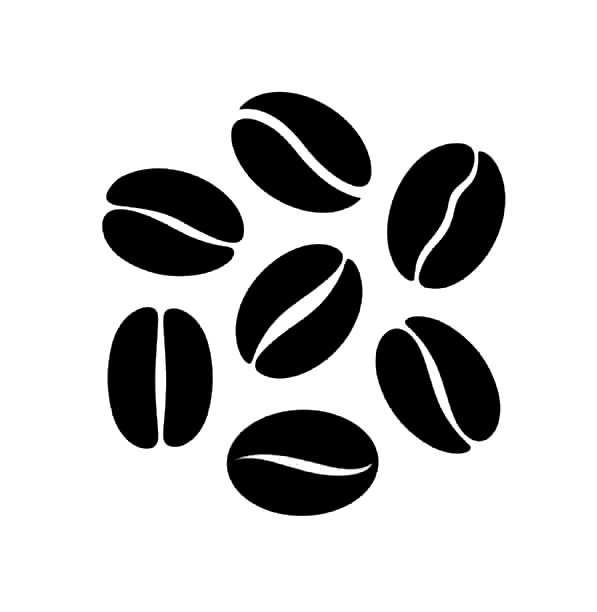
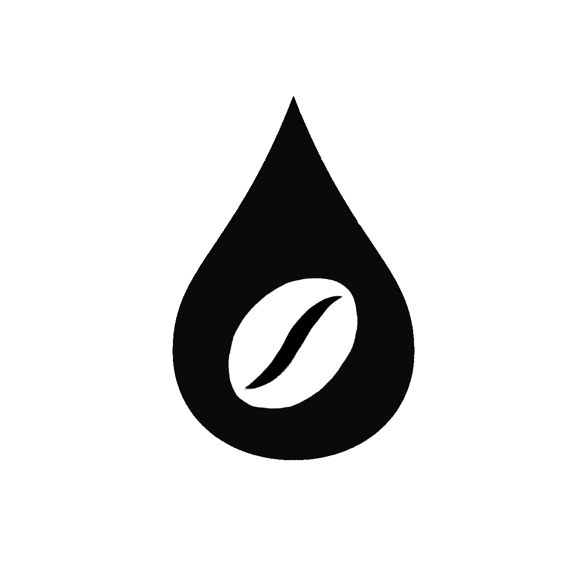

Nuestros cafés contienen exclusivamente granos 100% arábica, cultivados en fincas de alta montaña. Disfruta una taza premium con aroma intenso, notas dulces y una acidez perfectamente balanceada en cada sorbo.
Tostamos de forma artesanal y libre de azúcares añadidos para respetar la pureza y los atributos reales de cada origen. Al enviártelo recién tostado, aseguramos que los compuestos aromáticos lleguen intactos a tu hogar, evitando el sabor plano y rancio del café comercial.

Nuestro café está diseñado para interactuar de forma ideal con el agua, facilitando una disolución equilibrada de sus propiedades a temperaturas estándar (90°C-95°C). Gracias a la densidad y calidad del grano, obtendrás siempre una taza limpia, con el cuerpo perfecto y un balance excepcional.